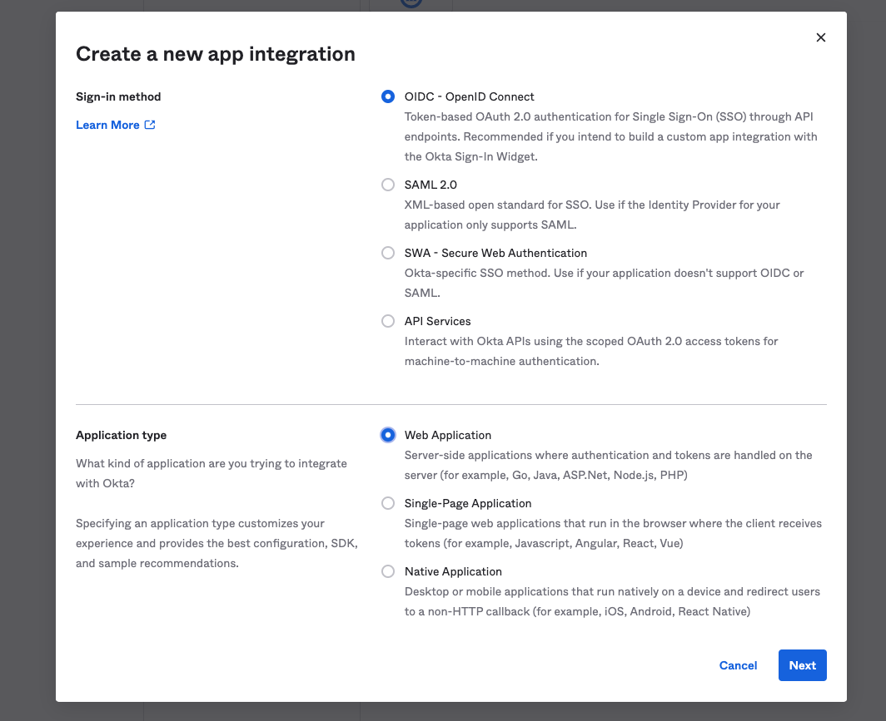
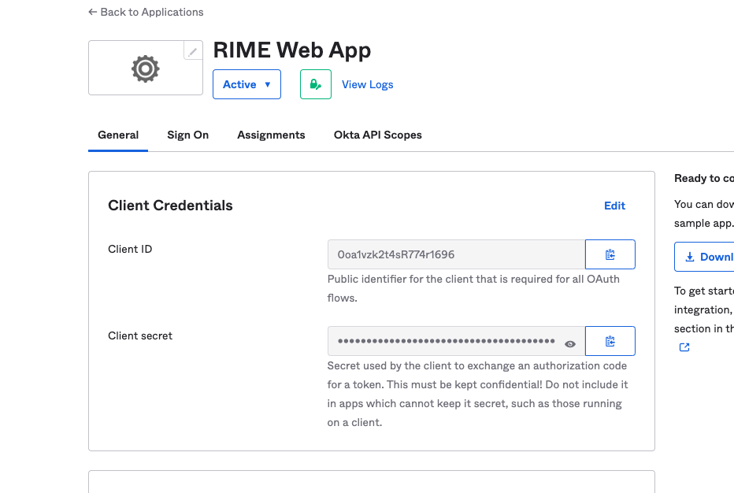

Values
Before getting started with the actual deployment, please make sure that you have the following information with you:
Docker
You will need to have a dockerhub account that has access to Rime repositories. Contact a Rime engineer if you have questions.
Dockerhub password: Password for your dockerhub account with access to Rime repositories. Ask a RIME engineer for access
OPTIONAL: OAuth
Client ID
Client Secret
Issuer URL
Make sure that you have an Application provisioned in Okta or another identity provider for your Rime App with the following permissions.
Navigate to your OAuth administrator page and find the above values. An example is here:
Lastly, you will need to add https://rime.<domain>/v1/auth/oidc/callback as a callback url for your provider. The above configuration was all setup with okta.
An admin can also set up SSO to use an external Identity Provider after cluster installation. More detailed instructions for configuration can be found in the SSO Configuration Guide
Users can login via basic authN service or SSO. Admin operations need to be performed via basic authN login.
S3
Bucket name where your data and models will be stored
OPTIONAL: Managed Images
To use managed images (i.e. RIME wheel images with additional user-specified PIP libraries for running RIME tests on your users’ models), you can install the RIME managed image registry, which uses your AWS ECR to store the managed images it creates.
Note: as of version 0.13.0, the managed image registry is enabled by default in our Terraform module.
Note: currently this feature is only available with AWS ECR.
In terraform you can configure this feature by adding a setting to your rime module of
the form:
image_registry_config = {
enable = true
repository_prefix = "rime-managed-images"
}
where the repository_prefix can be customized to any valid prefix to store the managed
repositories within your ECR. By enabling the managed image registry, you’ll give
permission to RIME’s image registry to create, delete and build images in your ECR, but
only for repositories with the given repository_prefix.
Permissions for the Managed Image Registry
The managed image registry manages new images for you within your ECR so that your users can have auto-updated rime images with the PIP libraries they require for their models. To manage image repositories within your ECR, you have to grant the registry with ECR permissions, which an admin can add automatically by applying our terraform module.
Enabling the managed image registry gives the following permissions to the server
but restricted only for repositories beginning with repository_prefix:
ecr:CreateRepository
ecr:DeleteRepository
ecr:DescribeImages
ecr:PutLifecyclePolicy
ecr:ListImages
so that the registry server can create and modify repositories with the given
repository_prefix. Additionally, it requires ecr:GetAuthorizationToken for all
resources in order to authorize itself.
Also, the managed image registry gives the following permissions to the jobs that build
your new images (only for repositories beginning with repository_prefix):
ecr:BatchGetImage
ecr:BatchCheckLayerAvailability
ecr:CompleteLayerUpload
ecr:GetDownloadUrlForLayer
ecr:InitiateLayerUpload
ecr:PutImage
ecr:UploadLayerPart
so that those jobs can pull and push new images to the repositories created with prefix
repository_prefix. These jobs also require ecr:GetAuthorizationToken for all
resources in order to authorize themeselves.
OPTIONAL: Notifications
If you want to be notified about certain events e.g. a test run finishing, you will need to have the following information.
Email
SMTP Email
SMTP Email Password
SMTP Server Url
SMTP Port
Receiver Emails (comma separated list of emails subscribed to notifications)
Admin User
Admin Email
Admin Password
Initial Username and Password for the first admin user to login. They will need to reset the password on login.
Secrets Manager
You will need to generate a file called secrets.json with the following structure based off the values you procured above:
{
"admin_username": <admin email>,
"admin_password": <admin password>,
"datadog-api-key": "<provided datadog-api-key>",
"docker-logins": [
{
"docker-server": "https://index.docker.io/v2/",
"docker-username": "robusthub",
"docker-password": "<token given>",
"docker-email": "dev@robustintelligence.com"
}
],
"oauth_client_id": "<Client ID from Okta app>",
"oauth_client_secret": "<Client Secret from Okta app>",
"oauth_well_known_url": <issuer url>,
"rime_jwt": "<jwt given>",
"rime-user": "<provided user ID for support>",
"smtp_email": <smtp email>,
"smtp_password": <smtp password>,
"smtp_server": "smtp server>",
"smtp_port": "<smtp port>"
}
You will then need to create a secret in aws called rime-secrets with the above value. You can do this with the following command aws secretsmanager create-secret --name rime-secrets --description "Secrets for rime service" --secret-string file://<path-to>/secrets.json.
VPC
Rime expects you to have a valid vpc provisioned in the region that you want to deploy the Rime cluster onto. You will be expected to pass in subnets and the vpc id of your vpc as part of terraform setup.
DNS
Rime also expects you to have a valid route53 domain(eg. latest.dev) and acm certificate for your domain with wildcard access on subdomains(so that RIME can provision dns records). This domain will be passed in as part of terraform setup. If you do not have the ability to set up DNS, your cluster must be setup on private subnets to ensure security without TLS.